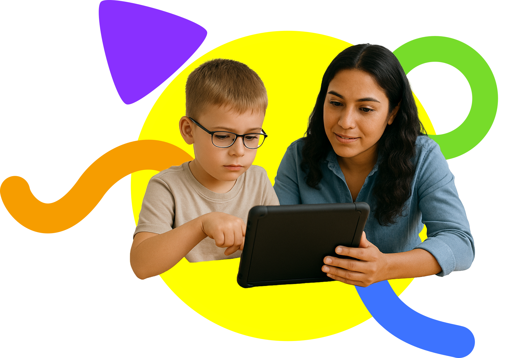

The best artificial voice system and AAC keyboard for human-like, real-time communication.
Whether you're navigating autism, recovering from a stroke, or supporting someone with apraxia,
we provide the best keyboards, real-time voices, and assistive interface for children, adults, and caretakers.
What is an AAC?

A digital Augmentative/Alternative Communication (AAC) system is a
special software that allows non-verbal people to communicate digitally
through the use of images and word-buttons to create text. Most AAC
provide artificial digital voices that read the text the user types,
however, different AACs provide different benefits. Aloud provides the
highest quality artificial voice system available, with state-of-the-art
custom keyboards for the fastest communication.
Why Choose Aloud?
Aloud is the first Text-To-Speech suite for non-verbal people. While
traditional AACs worry about writing sentences, we care about
communication, providing tools for faster, more human conversations.